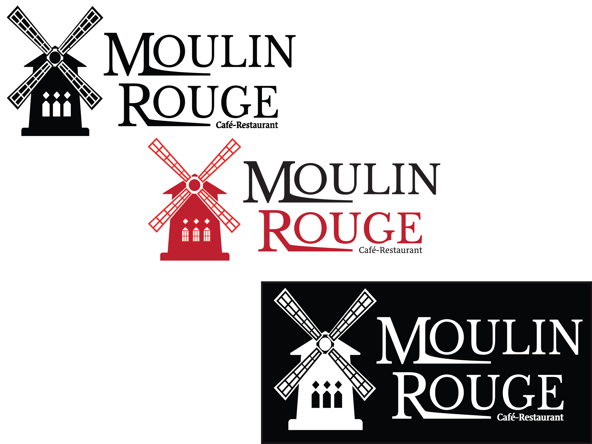
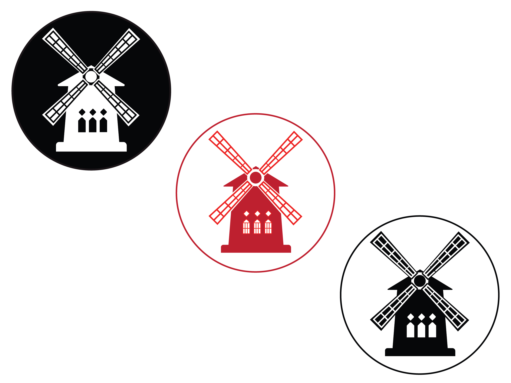

01 / Brand Mark & Logo Design
A versatile, scalable icon designed to serve as the foundational anchor of the restaurant's entire visual ecosystem.
Role: Lead Brand Designer | Expertise: Concept, Visual Strategy, Print Production
The objective was to build a comprehensive, unified visual identity for a modern culinary concept. The brand needed to bridge the gap between a clean digital presence and a premium physical dining atmosphere, ensuring all design assets scale seamlessly from small business cards to large environmental signage.
I crafted a distinct, minimalist logo mark paired with a sophisticated color palette. To protect long-term brand equity, I established a definitive style guide outlining strict typographic hierarchies. This visual system was then deployed across tangible touchpoints, including high-contrast promotional posters and corporate business cards.


A versatile, scalable icon designed to serve as the foundational anchor of the restaurant's entire visual ecosystem.

A multi-page spread detailing the color theory swatches, font pairings, and asset usage rules to ensure cross-platform brand integrity.


High-contrast, double-sided corporate stationery layouts optimized for professional tactile impact and clean typography.

A high-contrast marketing poster mockup styled inside a sleek gallery frame to demonstrate real-world physical scale and presence.
Tools & Skills Applied:
Adobe Illustrator •
Adobe Photoshop •
Brand Strategy •
Print Production •
Typography